Основы пространственного анализа. Лекция 4
Интерполяция - это метод восстановления непрерывных поверхностей по набору дискретных измерений или получение промежуточных значений на основе известного набора данных.
Например, у вас есть измеренные значения высот в определенных точках, а вы хотите получить по ним цифровую модель рельефа с помощью интерполяции.
На заметку
Кроме интерполяции еще есть экстраполяция - получение прогнозных значений за пределами известных данных.
В географии обычно имеют дело с двумерным случаем интерполяции — когда измерения проведены в некоторых географических локациях, и по ним нужно восстановить непрерывную картину поля распределения величины. В общем случае неизвестно, как ведет себя исследуемое явление между точками, поэтому существует бесчисленное множество вариантов интерполяции.1
А еще интерполяцию не нужно путать с аппроксимацией. Интерполяция позволяет получить функцию, которая точно проходит через точки с известными значениями, а аппроксимация дает только приближенные значения.
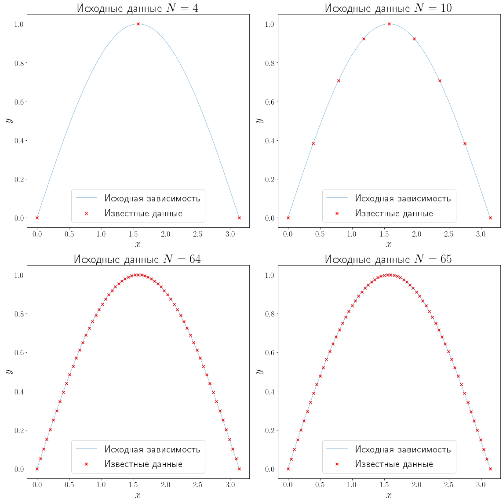
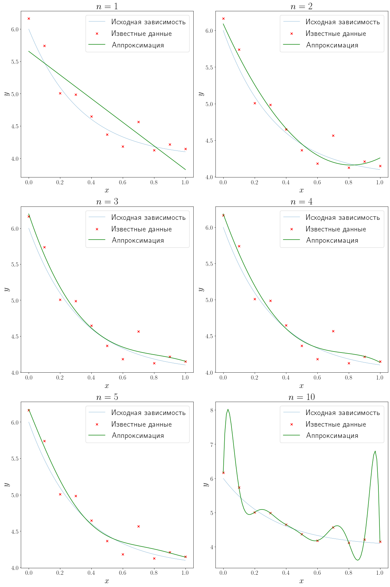
Все методы интерполяции могут быть разделены на две группы:
детерминистские/детерминистические - это методы интерполяции, основанные на заданных зависимостях и близости наблюдений;
геостатистические - методы, учитывающие пространственную автокорреляцию и позволяющие построить поверхность на основе статистической зависимости.
На заметку
Методы первой группы значительно проще в использовании и интерпретации результатов, но не учитывают поведение величины между точками, которое определяется автокорреляцией.
Методы второй группы сложнее, но могут давать более точные результаты.
На заметку
Все методы интерполяции в той или иной степени основаны на идее, что значение интерполянта в точке должно в большей степени зависеть от значений данных в близлежащих точках, чем в удаленных. В интерполяции по принципу «естественного соседа» идея «соседства» в пространственной конфигурации формализуется естественным образом и становится количественной, а свойства метода зависят от, по-видимому, новой геометрической тождественности, связывающей эту количественную меру «соседства» с положением2.
В основу метода ближайшего соседа положены полигоны Вороного, полигоны Тиссена или тесселяция Дирихле.
Разбиение плоскости с точками на выпуклые многоугольники таким образом, что каждый многоугольник содержит ровно одну образующую точку, и каждая точка в данном многоугольнике находится ближе к своей образующей точке, чем к любой другой3.
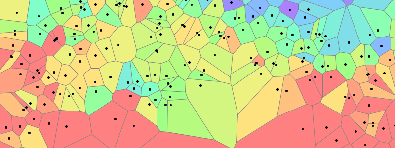
Простое объяснение
Пусть есть карта города, на которой точками обозначены почтовые отделения. Человек хочет отправить письмо, и он пойдёт на ближайшую почту. Ему интересно знать, какое отделение ближе, для любой точки города — необходимость отправить письмо может наступить неожиданно. Для этого он может взять карту и расчертить её на ячейки так, чтобы внутри каждой ячейки находилось только одно отделение, а для всех остальных точек ячейки именно эта почта была ближайшей. Полученная картинка и будет диаграммой Вороного для точек-почт4.
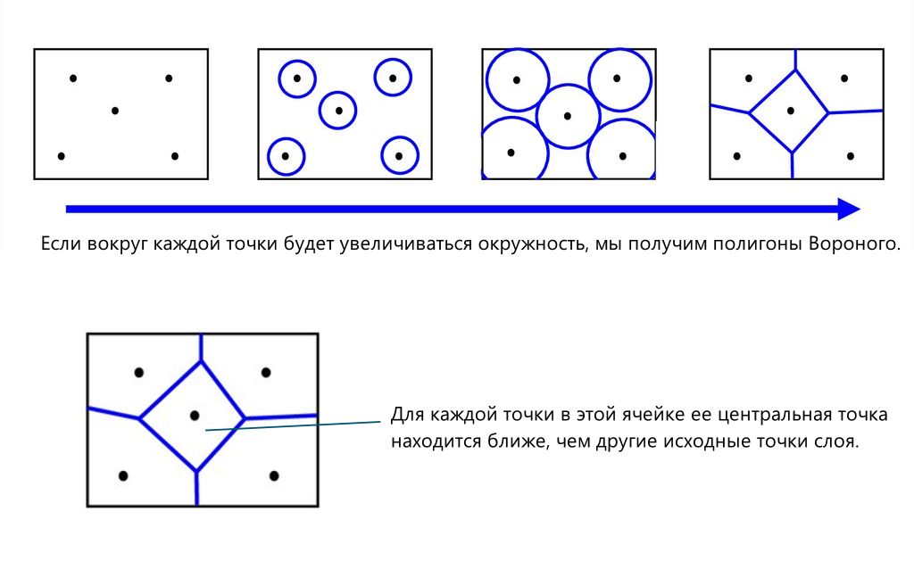
При интерполяции принимается, что внутри каждого полигона значение постоянно.
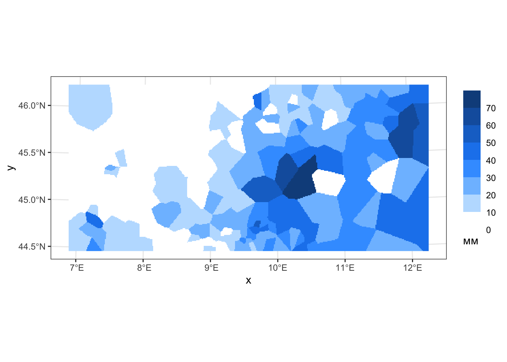
Источник: Самсонов Т.Е. Визуализация и анализ географических данных на языке R. М.: Географический факультет МГУ, 2024. DOI: 10.5281/zenodo.901911
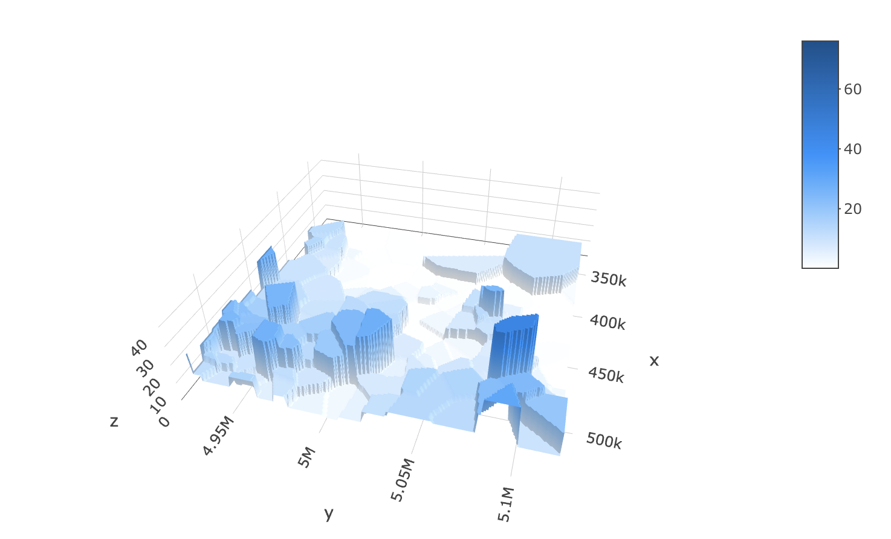
Источник: Самсонов Т.Е. Визуализация и анализ географических данных на языке R. М.: Географический факультет МГУ, 2024. DOI: 10.5281/zenodo.901911
В этом случае на первом этапе строится триангуляционная сеть (как правило, на основе триангуляции Делоне), после чего для каждого из полученных треугольников выстраивается плоскость. Из полученного набора плоскостей формируется общая поверхность.
На заметку
Подразбиение Делоне множества точек — такое разбиение выпуклой оболочки множества точек на множество выпуклых фигур, что в окружности, описанной вокруг любой из фигур, не находится никаких точек из множества.
Триангуляция Делоне множества точек — триангуляция, являющаяся подразбиением Делоне.
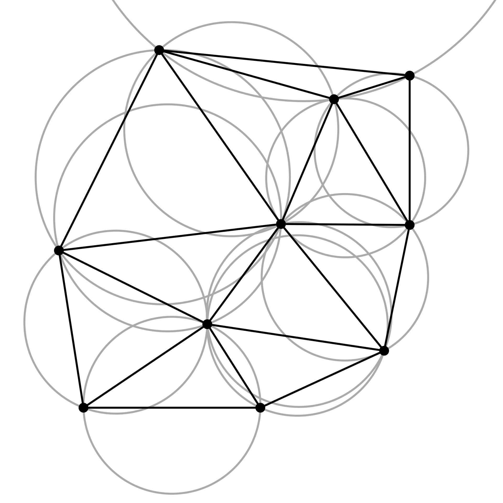
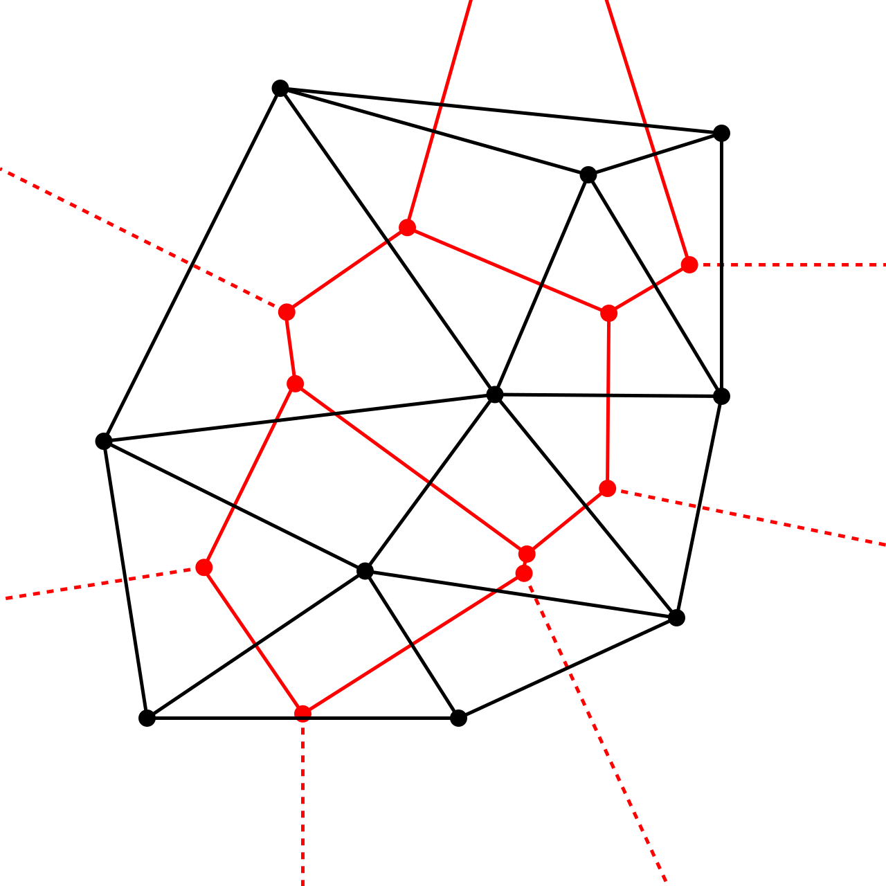
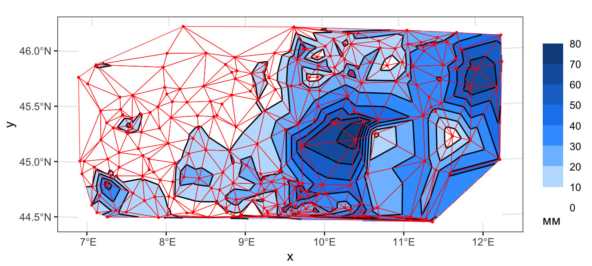
Важно
В том случае, если вы работаете с данными рельефа, то рекомендуется использовать методы на основе триангуляции. Так как при использовании таких методов интерполяция происходит в пределах тех значений, которые известны.
Так вы получите триангуляционную модель рельефа - описание рельефа в виде набора высотных отметок ли отметок глубин в узлах треугольников - элементов триангуляции Делоне и ее обобщений5.
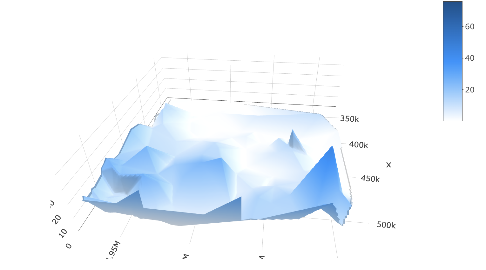
Источник: Самсонов Т.Е. Визуализация и анализ географических данных на языке R. М.: Географический факультет МГУ, 2024. DOI: 10.5281/zenodo.901911
В этом методе значение показателя в произвольной точке будет равно средневзвешенной сумме значений в исходных точках.
\[ z(p)=\begin{cases} \dfrac{\Sigma^N_{i=1}w_i(p)z_i}{\Sigma^N_{i=1}w_i(p)} & \quad \text{если $d(p,p_i) \neq0$ для всех $i$}\\ z_i & \quad \text{если $d(p,p_i) = 0$ хотя бы для одного $i$} \end{cases} \]
где \(w_i(p)=|p-p_i|^{-p}\) - весовая функция.
Весовая функция может быть вычислена, например, по методу Шепарда:
\[ w_i(p)=d_i^{-2}/\sum_{j=1}^{n}d_i^{-2} \]
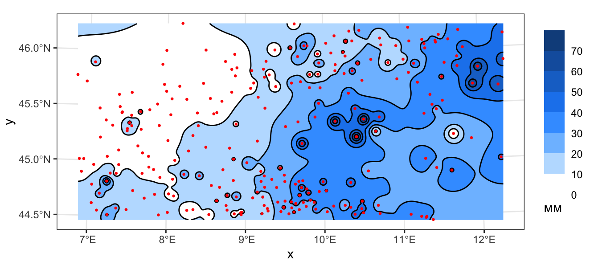
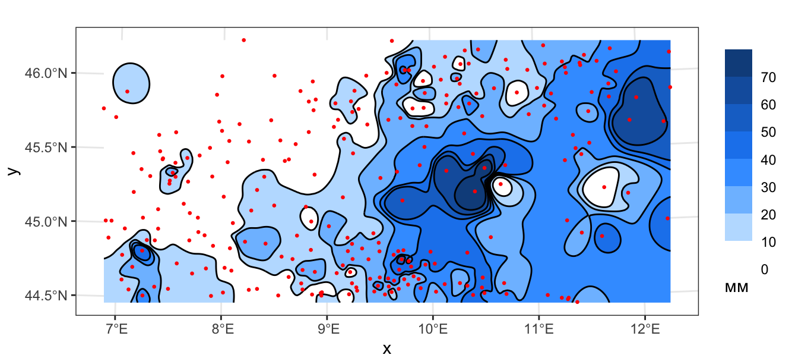
Внимание
Большим недостатком метода является то, что он может давать ложные экстремумы и порождать значения, находящиеся за пределами измеренных.
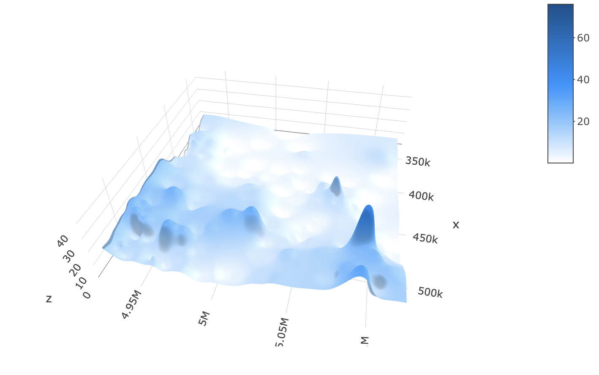
Важно
Основным параметром при использовании метода обратных взвешенных расстояний является степень весовой функции: при небольших ее значениях вы получите более острые вершины, а при ее увеличении - поверхность будет становиться более платообразной.
После определенного порога значения степени весовой функции поверхность станет приближенной к ступенчатой поверхности, полученной при интерполяции методом ближайшего соседа.
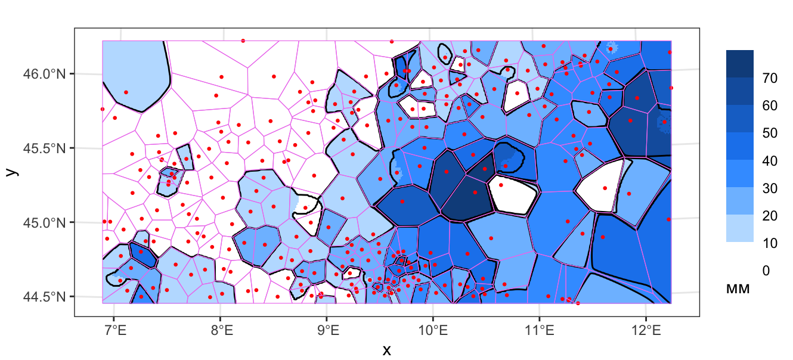
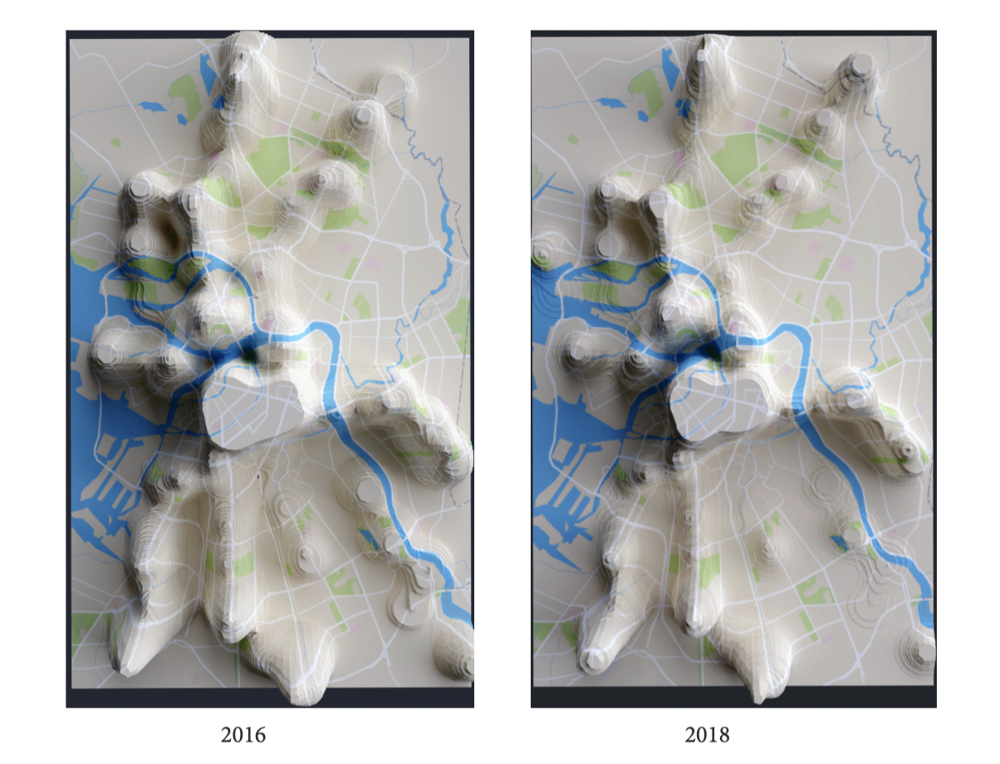
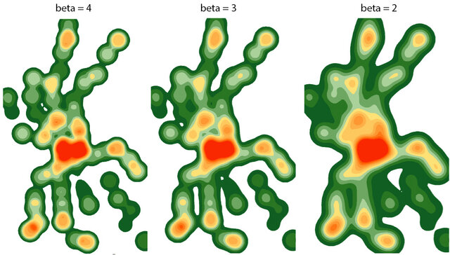
При использовании радиальных базисных функций значение в произвольной точке \(p\) рассчитывается на основе взвешенного среднего значения радиальной функции \(\phi\).
\[ Z(p)=\sum^{n}_{i=1}\lambda_i\phi(||p-p_i||) \]
Коэффициенты \(\lambda_i\) находятся заранее на основе \(n\) и условия \(Z(p_i)=z_i\).
В этом методе могут использоваться различные функции, что делает его достаточно гибким.
Однако, как и метод обратных взвешенных расстояний, метод радиальных базисных функций может давать значения за пределами измеренных величин.
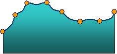
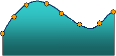
Этот недостаток может быть отчасти нивелирован при использовании сплайнов минимальной кривизны (thin plate spline — TPS), которые позволят получить поверхность, проходящую через все точки с известным значением и минимальной кривизной между ними. Это позволит избежать резких изменений, которые характерны для метода обратных взвешенных расстояний.
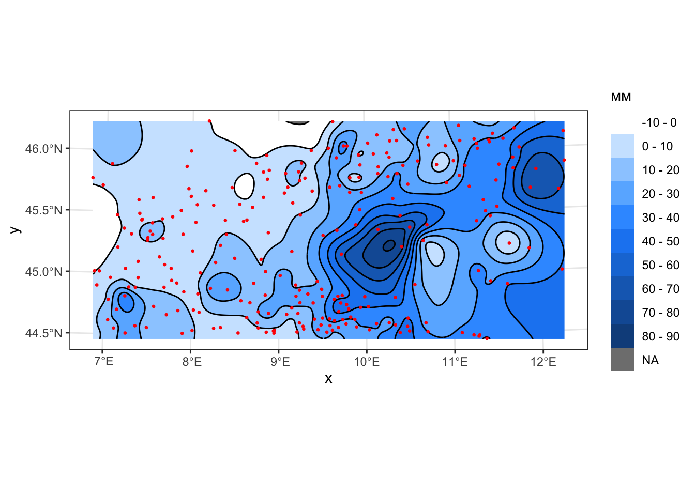
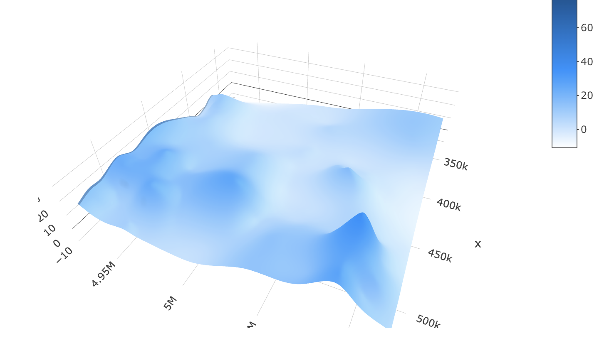
Кригинг является методом геостатистической интерполяции.
Метод назван по имени Дэниэла Криге - южноафриканского геолога, который занимался оценкой запасов месторождений.
На заметку
Геостатистические методы основаны на наличии пространственной автокорреляции, то есть связи наблюдаемых в различных местах значений.
Пространственная автокорреляция основана на том, что существует связь между значениями близко расположенных наблюдениями.
Основная идея кригинга в связывании дисперсии наблюдаемых значений с расстоянием до определенных точек.
Базируется такая оценка на полудисперсии: \[\gamma(h)=\dfrac{1}{2}E([z(x+h)-z(x)]^2)=\dfrac{1}{2N}\sum_{i=1}^{N}[z(x_i+h)-z(x_i)]^2\] где \(x\) - конкретная точка, \(h\) - расстояние между точками или лаг, \(x+h\) - другая точка на расстоянии \(h\) от точки \(x\), \(z(x)\) и \(z(x+h)\) - значения в этих точках, \(E\) - среднее квадратов разностей (отсюда и преобразование формулы), \(N\) - количество пар наблюдений, находящихся на расстоянии \(h\), \(x_i\) - \(i\)-ая позиция среди \(N\) пар.
Важно
Так как рассчитываемая величина равна половине математического ожидания квадратов разностей, поэтому она называется полудисперсией.
В случае реальных наблюдений, как правило, практически нет пар, расположенных на конкретном расстоянии \(h\) друг от друга, поэтому вместо конкретного расстояния используются диапазоны расстояний. То есть пары наблюдений, расстояние между которыми попало в определенный интервал будут считаться расположенными друг от друга на среднем для этого интервала расстоянии.
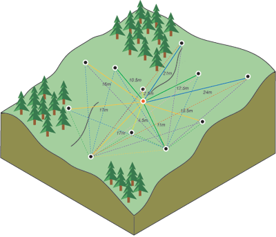
Источник: https://desktop.arcgis.com/ru/arcmap/latest/tools/3d-analyst-toolbox/how-kriging-works.htm
На первом этапе кригинга необходимо построить график эмпирической полудисперсии, на которой показывается зависимость полудисперсии от лага (расстояния) между значениями.
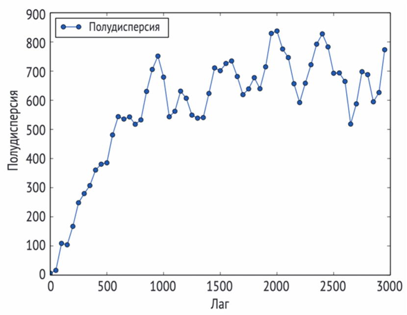
Предупреждение
В некоторых источниках полудисперсия и полувариограмма используются как тождественные понятия, хотя полудисперсия - это числовое выражение вариации, а полувариограмма - график, показывающий полудисперсию.
В качестве исходных данных для построения полувариограммы используются сведения о местоположении наблюдений и значения наблюдений. На основе местоположения наблюдений рассчитывается лаг между ними как матрица расстояний между всеми парами точек.
На основе расстояний и значений наблюдений рассчитываются квадраты разности, а далее среднее значение квадратов разности для определенных интервалов.
В первую очередь имеют значение отдельные элементы графика, например, то, где вариограмма пересекается с осью Y, то есть значение полудисперсии при нулевом расстоянии. Это значение называется самородком (nugget). Как правило, если существует значительная разница между наблюдениями, расположенными в одном месте, это может показывать наличие ошибки измерения.
Второй важный элемент полувариограммы - это порог (sill), то есть то значение, при котором график выходит на плато, а расстояние, на котором этот порог достигается называется размахом (range). Фактически размах показывает расстояние, при достижении которого значения наблюдений перестают быть связанными друг с другом.
Сам факт наличия порога и размаха говорит о том, что расстояние оказывает влияние на дисперсию значений: чем больше расстояние, тем выше дисперсия, то есть тем сильнее несходство двух наблюдений.
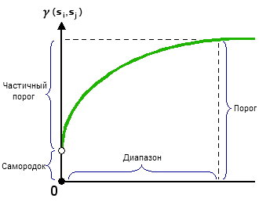
Источник: https://desktop.arcgis.com/ru/arcmap/latest/tools/3d-analyst-toolbox/how-kriging-works.htm
Кроме полудисперсии в качестве количественной метрики сходства наблюдений используется ковариация между парами: \[C(h)=E[(z(x)-\mu)(z(x+h)-\mu)]=\dfrac{1}{N}\sum_{i=1}^{N}z(x_i)z(x_i+h)-\mu^2\] где \(\mu\) - среднее наблюдаемое значение при лаге (расстоянии) \(h\).
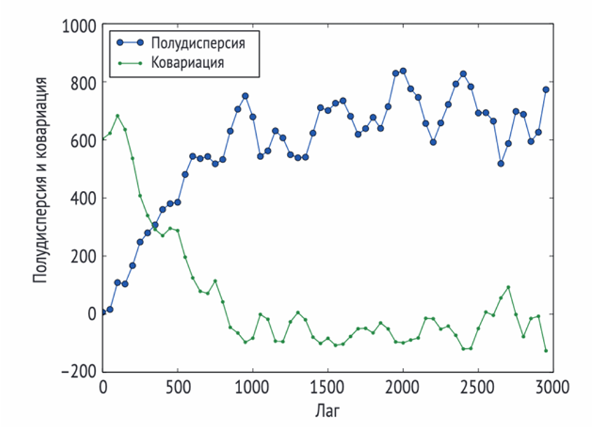
Тенденции изменения полувариограммы и ковариации противоположны друг другу. С учетом предположения, что среднее и дисперсия наблюдаемой величины постоянны в пространстве, то можно вывести взаимосвязь между величинами: \[C(0)=E[(z(x)-\mu)^2]= var[z(x)],\: \gamma(h)=C(0)-C(h)\] где \(var\) - дисперсия данных.
Далее задача интерполяции с использованием кригинга сводится к математической оптимизации функции.
Наиболее широко распространенными моделями аппроксимации полувариограммы являются (во всех уравнениях \(c_0, \ c, \ a\) - самородок, порог и размах соответственно):
линейная модель, выходящая на пороговый уровень по прямой с постоянным углом наклона \[\gamma(h)=\begin{cases} c_0+c\left(\dfrac{h}{a}\right) & \quad 0 \leq h \leq a \\ c_0+c & \quad h>a \\ 0 & \quad h=0\end{cases}\]
сферическая модель, в которой порог достигается на расстоянии размаха, при этом угол наклона при приближении к пороговому значению уменьшается \[\gamma(h)=\begin{cases} c_0+c\left[\dfrac{3h}{2a}-\dfrac{1}{2}\left(\dfrac{h}{a}\right)^3\right] & \quad 0 \leq h \leq a \\ c_0+c & \quad h>a \\ 0 & \quad h=0\end{cases}\]
экспоненциальная модель, которая аналогична сферической модели с той лишь разницей, что на расстоянии размаха в ней достигается только 95% от порогового значения \[\gamma(h)=\begin{cases} c_0+c\left[1-e^\left(\dfrac{h}{a}\right)\right] & \quad h>0 \\ 0 & \quad h=0\end{cases}\]
гауссова модель не достигает порога на расстоянии размаха \[\gamma(h)=\begin{cases} c_0+c\left[1-e^\left(\dfrac{h^2}{a^2}\right)\right] & \quad h>0 \\ 0 & \quad h=0\end{cases}\]
Выделяют два основных вида кригинга:
обыкновенный или обычный (ordinary) кригинг, в котором среднее значени считается неизвестным и постоянным только в окрестностях точки оценивания;
простой (simple) кригинг, в котором среднее значение будет постоянным во всей области.
В общем случае кригинга результатом будет являться вычисленное значение в любой произвольной точке с учетом весовых коэффициентов для близких точек: \[\hat z(x_0)=\sum_{i}\lambda z(x_i)\]
С учетом предположения, что \(\sum_{i}\lambda_i=1\).
От вида кригинга будет зависеть способ вычисления весовой матрицы.
При использовании аппроксимационных методов определяются тренды изменения в данных: глобальный и локальный (в окрестностях каждой точки).
В этом случае полученная поверхность не будет проходить через все точки.
Чаще всего в аппроксимационных методах используются поверхности разного порядка:
0 порядок - горизонтальная плоскость;
1 порядок - наклонная плоскость;
2 и 3 порядок - квадратичная и кубическая поверхность соответственно.
Поверхность 0 порядка
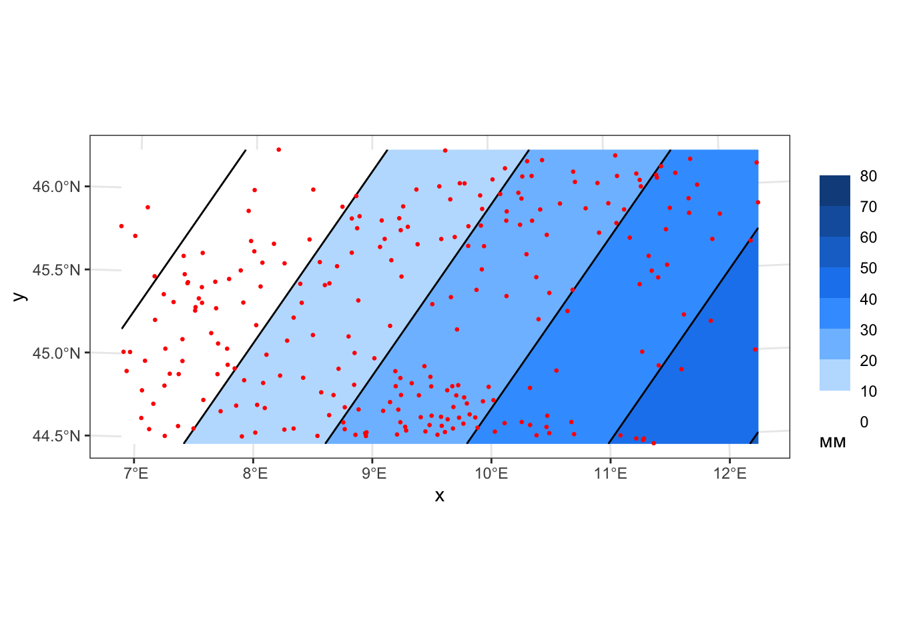
Поверхность 1 порядка
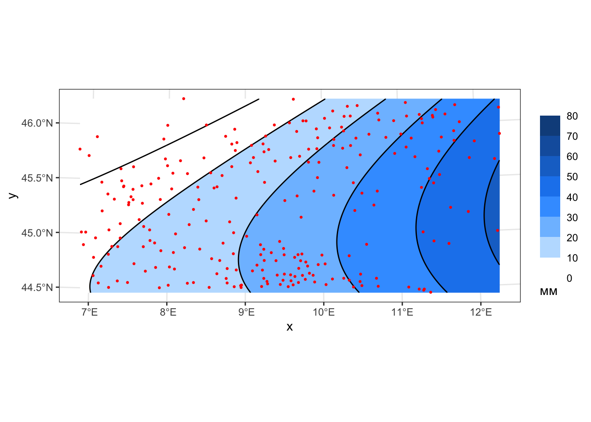
Поверхность 2 порядка
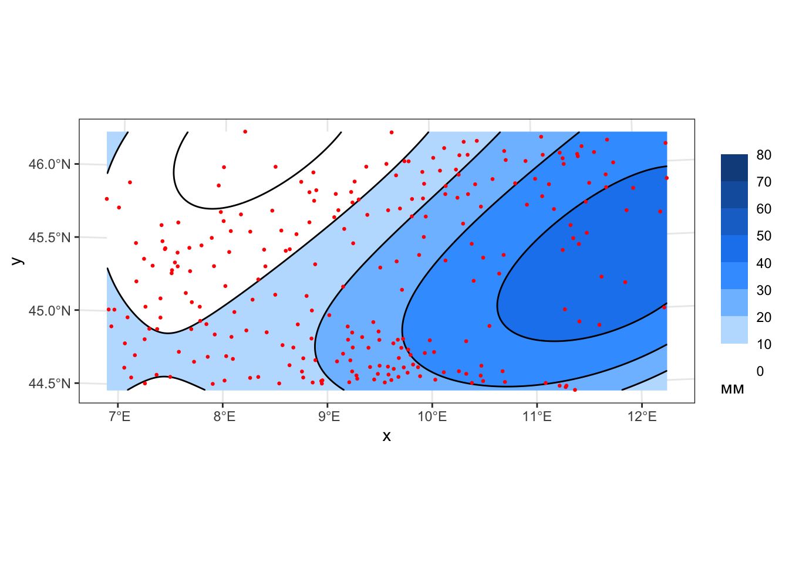
При расчете локального тренда поверхность строится только в окрестностях ближайших исходных точек.
Построение локальных трендов основано на построении регрессионной модели в окрестностях этих точек и сглаживании результатов.
Аналогично глобульному тренду может использовать поверхности различных порядков.
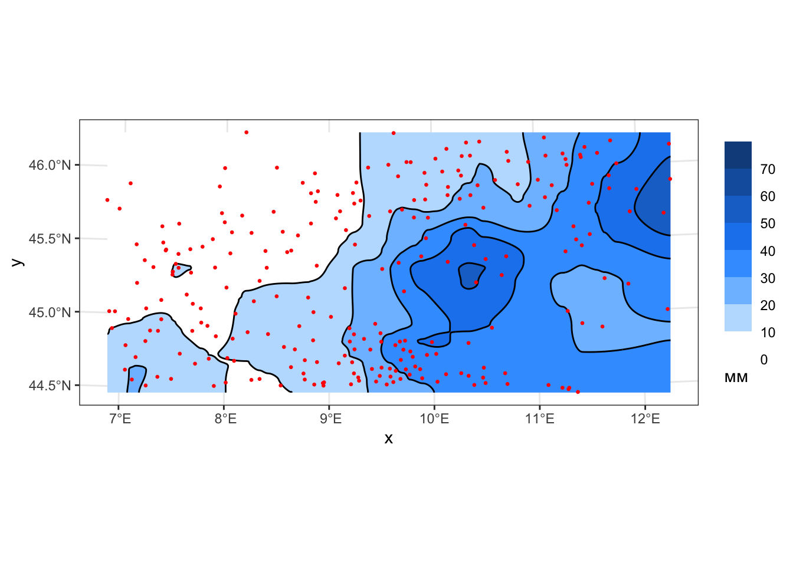
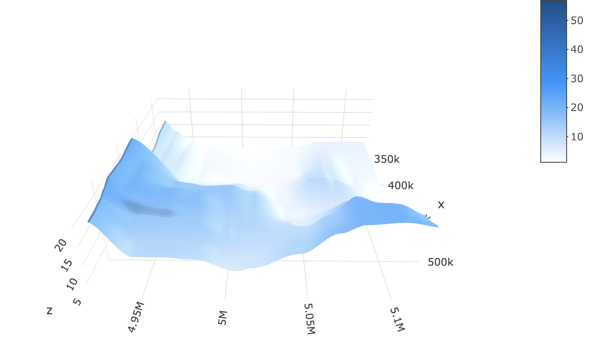
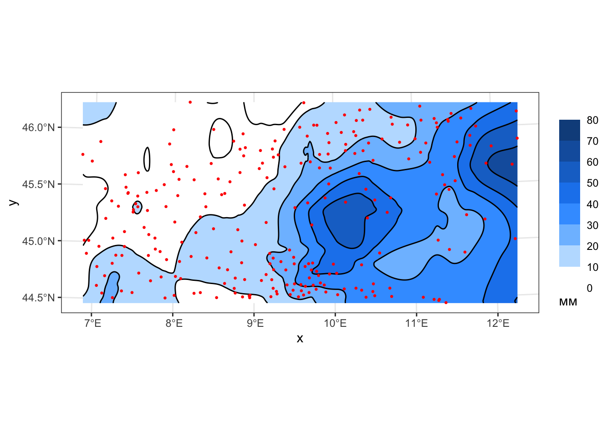
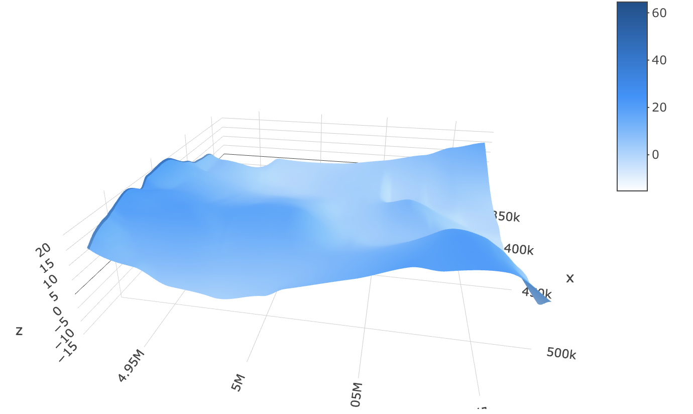
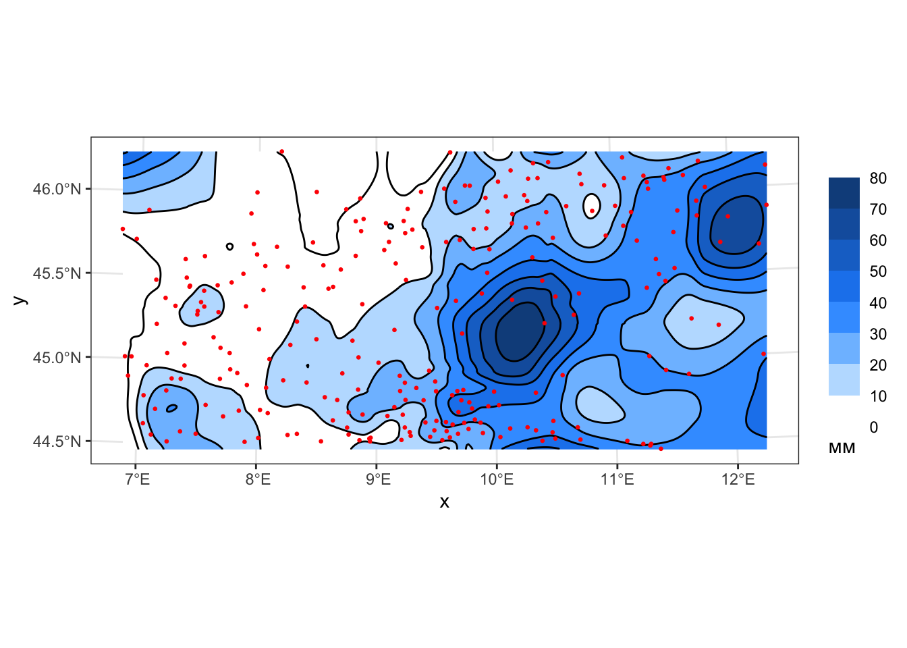
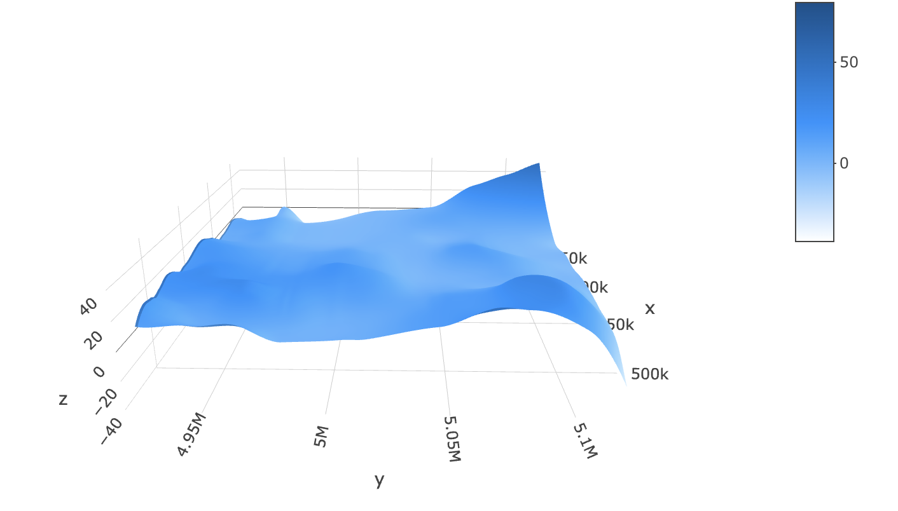
Самсонов Т.Е. Визуализация и анализ географических данных на языке R. М.: Географический факультет МГУ, 2024. DOI: 10.5281/zenodo.901911
Sibson, R. (1981), A Brief Description of Natural Neighbor Interpolation. In Interpolating multivariate data, John Wiley & Sons, New York, 1981, pp. 21-36.
Диаграмма Вороного https://neerc.ifmo.ru/wiki/index.php?title=%D0%94%D0%B8%D0%B0%D0%B3%D1%80%D0%B0%D0%BC%D0%BC%D0%B0_%D0%92%D0%BE%D1%80%D0%BE%D0%BD%D0%BE%D0%B3%D0%BE
ГОСТ Р 52438-2005 Географические информационные системы. Термины и определения
Как работают радиальные базисные функции https://pro.arcgis.com/ru/pro-app/3.4/help/analysis/geostatistical-analyst/how-radial-basis-functions-work.htm
Балтыжакова Т.И. Основы пространственного анализа: курс лекций